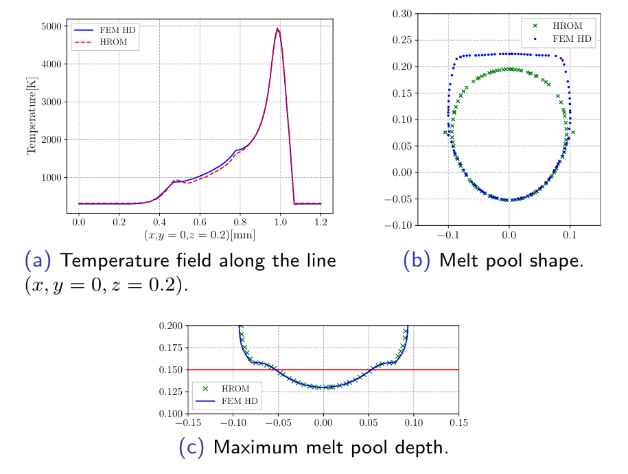

The simulation of the Selective Laser Melting (SLM) process is studied. I mainly considered the non-linear thermal simulation of the process where the solid/liquid phase change and the consolidation from powder to solid material are considered. The thermal simulation is performed on a moving domain, and the material state is computed on a fixed global mesh. This technique has the advantage of reducing not only the number of degrees of freedom, but also of enabling the application of reduced order models for the moving domain where a set of partial differential equations must be solved.
Simulation results displaying every element
Moving domain shown on the right and fixed global mesh shown on the left.
Simulation results displaying elements with material in consolidated state
Moving domain shown on the right and fixed global mesh shown on the left.
Reduced order model based on the material Global-Local method
Comparison of the high fidelity solution and the one obtained with a hyper reduced order model based on the material global-local method.
